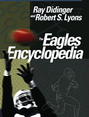

The first comprehensive history of the Philadelphia Eagles
The first comprehensive history of the Philadelphia Eagles


 The first comprehensive history of the Philadelphia Eagles
The first comprehensive history of the Philadelphia Eagles

|  |
The Eagles EncyclopediaRay Didinger and Robert S. Lyonscloth EAN: 978-1-59213-449-6 (ISBN: 1-59213-449-1) |
"The 324-page 'Eaglepedia,' which the publisher describes as the first comprehensive history of the team, has everything a Bird-watcher could want to know—and maybe even a little more—from pro football's local beginnings as a stepchild of the Phillies and the Athletics to the Eagles' Super Bowl loss to the New England Patriots."
—The Philadelphia Inquirer
In the City of Brotherly Love, no team tugs at the hearts and weighs on the minds of fans more than the Philadelphia Eagles. But, much more than a local obsession, the Eagles are also one of football's most storied franchises.
Amply illustrated with 200 photos of the players, coaches, fans, and the stadiums in which the team has played, The Eagles Encyclopedia recounts the greatest moments in the team's history, and brings to life the men who helped create modern football.
Fans will read about:
Bert Bell's 1933 purchase of the Frankford Yellow Jackets, the city's first NFL franchise
The Philadelphia-Pittsburgh "Steagles"during WWII, which produced the team's first winning season
The 1960 NFL title victory over the Packers and the 1980 Super Bowl game
The sterling careers of Hall of Famers like Chuck Bednarik and Steve van Buren
The Duffel Bag Dynasty of 1947-1949, when the Eagles went to three consecutive NFL championships, including back-to-back championships
The thrilling 21st century, which has so far seen four consecutive NFC championship games and a second Super Bowl bid!
But wait, there's more! The Eagles Encyclopedia also includes:
A year by year history of the team—from 1933 to the present, with stats from each season
Individual profiles of more than 100 Eagles players—from Swede Hanson to Donovan McNabb
A statistical chapter that provides all the Eagles records—a complete roster, and every draft pick
Written by Pro Football Hall of Fame writer Ray Didinger and local sports historian Robert S. Lyons, The Eagles Encyclopedia is the first comprehensive chronicle of the team's history and an indispensable guide for every Eagles fan.
This book is not sanctioned by the NFL or its teams.
Excerpt available at www.temple.edu/tempress
"This is the definitive book for any Eagles fan."
—The Philadelphia Daily News
"...no true Eagles fan should be without it."
—KYW's Bill Campbell
"Packed with stats, anecdotes and photographs as well as deep tables noting every draft pick and individual profiles of more than 100 Eagles players, The Eagles Encyclopedia is quite complete."
—Christopher Fritz, the Wilmington (Del.) News Journal
"Ray Didinger knows more about Eagles football than every barstool quarterback in town... He's smart and classy, a thinking person's football analyst. That's why this plug for his new treatise: The Eagles Encyclopedia."
—Tim Whitaker, the Philadelphia Weekly
"Positive reviews of sports books generally include lines like 'This book is not really about sports' or 'This book is about so much more than a game.' Phooey to that. The Eagles Encyclopedia is terrific precisely because it couldn't be any more about sports or football. Written by two of the biggest Eagles experts around, EE is loaded with stats, team history, informative profiles, and plenty of trivia (including the fact that the 1980 Birds were the first team in NFL history to receive a papal blessing). If you don't care about the Eagles, stay away—you'll find no lessons about the human condition here. But if the Birds make your life worth living, this is a great way to fill those stretches between football Sundays."
—Jack Corcoran, Philadelphia Magazine
"It's everything the title says it is—and more. From the very beginning when the first football game in Pennsylvania was played in Latrobe, Pa., up through last year's painful end, The Eagles Encyclopedia is packed with the kind of arcane statistics that your friends will launch at each other during games for years to come. Of course, this could be aiding and abetting a Birds addiction, but The
Eagles Encyclopedia is sure to shine under any E-A-G-L-E-S Christmas tree."
—Philadelphia Style
"If you haven't seen it yet, the 324-page Eagles Encyclopedia, by Ray Didinger and Bob Lyons, is a must for holiday sports fans. The 'Sidelines' chapter is a classic, with fun shorts and 'Best and Worst' lists."
—Kevin Mulligan, Daily News
"An Eagles town deserves as Eagles book... and thus was born the Eagles Encyclopedia. The book comes complete with a detailed history of the origins of the franchise, a comprehensive listing of the team's head coaches, stadiums and more, as well as a treasure trove of stories through player profiles and top moments."
—C.J. Mittica, The Evening Bulletin
"Whether it's the birth of the Eagles, the profiles of the players, or the history of the stadiums, it's all a joy to read and full of anything you ever wanted to know about the Eagles—and then some."
—The Camden Courier-Post
"You don't have to be an Eagles fan to love this book. It's actually a slice of Philadelphia history. A great one. Written with love."
—The Philadelphia Inquirer
"The Eagles Encyclopedia is exactly what the title suggests and more. Ray, a long-time friend of most sports people in the Philadelphia area, is one of the most-respected reporters and authors on football in all of America.... Since he was old enough to walk and talk, his life and Eagles football have been one and the same. The son of a saloon owner in southwest Philadelphia, Ray quickly became the bar "tout" for the local gamblers filling out their football pools. The book is no gamble."
—Lou Tilley, Main Line Times
"If Eagles fans want to forget about this season, get this history book by Ray Didinger and Robert Lyons. There is nothing about the 2005 season, which is a good thing.... [I]t's a must for real Eagles fans."
—Mark Eckel, Trenton Times
"...a wildly impressive encyclopedia.... I recommend this book highly."
—True Review
"The book is packed with detailed accounts of the greatest moments in the franchise's history..."
—Vic Carucci
"You can have fun cracking [The Eagles Encyclopedia] open anywhere. The quality of writing and critical perspective is the same in profiles of current star players or faceless general managers from the '50s. In the words of Fred McGriff, 'I'm so impressed, I've given it my full endorsement.'"
—David Jones, The [Harrisburg] Patriot News
"[A] 324-page masterwork... vastly entertaining...the most readable history of the team ever done."
—The Philadelphia Inquirer
Preface
Acknowledgments
1. Professional Football in Philadelphia: The Early Years
2. Bert Bell and the Birth of the Eagles
3. Player Profiles
4. The Coaches
5. The Front Office
6. The Golden Years: 1948-49, 1960, 1980
7. The Super Century: 2000-2005
8. The Postseason
9. The Hall of Fame
10. The Stadiums
11. Milestone Moments
12. Eagles Fans: Portrait in Passion
13. Sidelines
Appendix A: Year-by-Year Highlights
Appendix B: Stats, Records, All-Time Roster, and Draft
 | Ray Didinger has won six Emmy Awards as a writer and producer at NFL Films. Before that, he was a reporter covering the National Football League for The Philadelphia Bulletin, and later The Philadelphia Daily News. In 1995 he was enshrined in the Pro Football Hall of Fame as the recipient of the Dick McCann Memorial Award for long and distinguished reporting of pro football. He is the author of One Last Read, and a weekly commentator and panelist on Comcast SportsNet's Post Game Live show during the football season. |
 | Robert S. Lyons (1939-2013) covered professional and college sports for the Associated Press for over thirty years. The former director of the La Salle University News Bureau, editor of La Salle, the university's alumni magazine, and instructor of journalism, advertising, and public relations at La Salle, was also the president of RSL Communications. He lived in the Philadelphia area. He is the author of Palestra Pandemonium: A History of the Big 5 (Temple). |
Philadelphia Region
Sports
General Interest
© 2015 Temple University. All Rights Reserved. This page: http://www.temple.edu/tempress/titles/1830_reg.html.